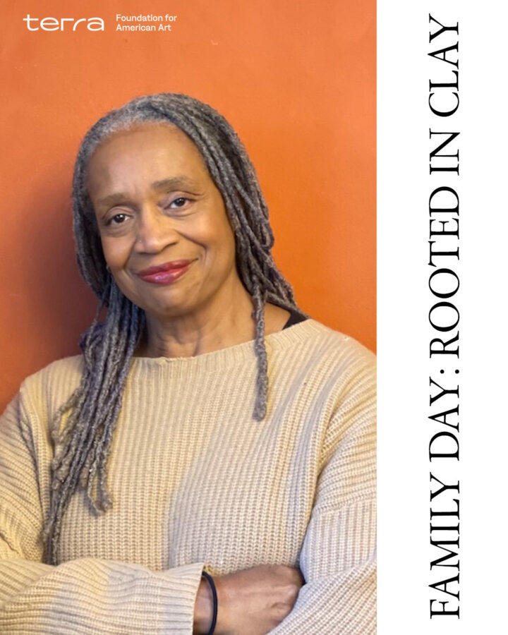

Family Day: Rooted in Clay
Inspired by Theaster Gates’s work in ceramics and sculpture, families will create 3-D art objects using air-dry clay. In collaboration with Hyde Park Art Center and with guidance from local artist and educator Malika Jackson, families will be encouraged to construct mobiles, stamps, pinch pots, & more as they shape, construct, and sculpt together!
Registration is strongly encouraged to help the Smart team best prepare for the day. Walk-ins will be welcome as space allows. Register here.
Malika Jackson is a visual artist and educator who has taught in the Chicago Public Schools, charter school, community organizations, and the Hyde Park Art Center. She earned her BFA & MFA from the School of the Art Institute, studied at Illinois State University, and completed a ceramic workshop in Tuscany, Italy. Her works have been exhibited in galleries, festivals, and in both group and solo shows.
Hyde Park Art Center is a hub for contemporary arts in Chicago, serving as a gathering and production space for artists and the broader community to cultivate ideas, impact social change, and connect with new networks. The Art Center functions as an amplifier for today and tomorrow’s creative voices, providing the space to cultivate and create new work and connections.
“Rooted in Clay” is generously supported by the Terra Foundation for American Art.